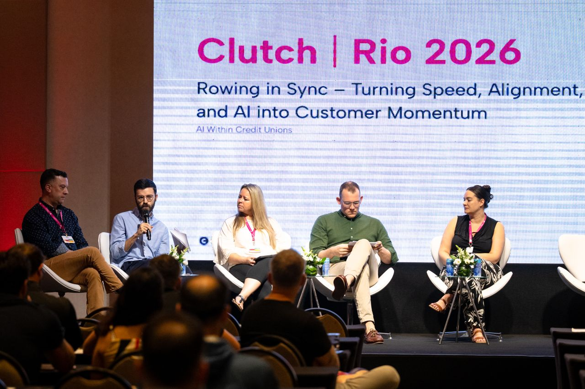

jake weber
recent projects
click a project to expand
a one-hour manual task, cut to five minutes
problem: Each employee was manually updating client files, copying eligible zip codes for John's business by hand.
solution: We automated John's file updates, cutting a one-hour task down to five minutes.
result: 200+ hours saved per year for John's team — roughly $15,000 a year in savings.
personal customer follow-ups, on autopilot
problem: Sean runs 3 small service businesses. Each requires weekly confirmation texts and payment requests. Sean likes to personalize these messages, but they take hours a week.
solution: We built Sean customer follow-up automations that text and email his clients with personal messages when they book one of his services.
result: This has saved Sean 8–12 hours per week.
